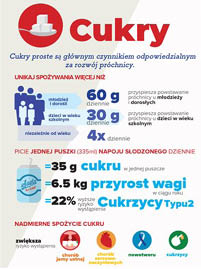

47
Profilaktyka zdrowia jamy ustnej
określonych białek zwanych cytokinami i hormonami pochodzącymi z tkanki tłuszczowej. Niektóre cytokiny chronią organizm przed stanem zapalnym, podczas gdy inne sprzyjają jego rozwojowi, co jest ważnym ogniwem w zapaleniu przyzębia. Ponadto stres oksydacyjny, jak już wyżej wspomniano, który zaburza równowagę między wolnymi rodnikami a obroną antyoksydacyjną, także może prowadzić do zniszczenia tkanek przyzębia. Dlatego też występowanie próchnicy zębów jest pierwszym objawem nieprawidłowej diety, chorób przyzębia, skutkiem nadwagi i otyłości, a także innych chorób metabolicznych.7 Udowodniono również związek pomiędzy chorobami przyzębia a chorobą Alzhaimera, która w publikacjach wydanych w ostatnim czasie nazywana jest „cukrzycą mózgu” (odmianą cukrzycy atakującą mózg).8 Może mieć to związek z dysbiozą biofilmu bakteryjnego spowodowaną wczesną kolonizacją jamy ustnej przez Streptococcus mutans jako wynik nadmiernej ekspozycji na cukier we wczesnym dzieciństwie (1,5–3. r.ż.). Powoduje to nie tylko zmianę biotypu bakteryjnego w jamie ustnej, ale również zmianę upodobań smakowych, co stymuluje nas do wyboru preferencji żywieniowych.
Cukier zaliczany jest także do pierwotnych czynników onkogennych powodujących rozwój nowotworów. Według Global Cancer Observatory z 2024 r. zapadalność na nowotwory jamy ustnej i warg jest na 16. miejscu na świecie, a umieralność z tego powodu na miejscu 15. Rak jamy ustnej stanowi ogólnoświatowy problem zdrowotny z uwagi na zapadalność ocenianą na ponad 600 tys. przypadków rocznie. Jest najczęstszym nowotworem złośliwym regionu głowy i szyi, 6. na liście raków na świecie. W Polsce nowotwór ten stanowi ok. 2,5% ogólnej liczby wszystkich zachorowań na nowotwory złośliwe. Najczęstszymi miejscami jego występowania są: dno jamy ustnej, dolna powierzchnia języka, trójkąt zatrzonowcowy oraz policzek.
Rycina I.3.4.
Rekomendacje spożycia cukrów prostych w populacji dzieci i dorosłych
Źródło: Polskie Towarzystwo Stomatologiczne. „Mniej cukru – więcej uśmiechu”: weź udział w debacie. pts.net.pl/mniej-cukru-
-wiecej-usmiechu-wez-udzial-
-w-debacie/. Dostęp 16.12.2025.
